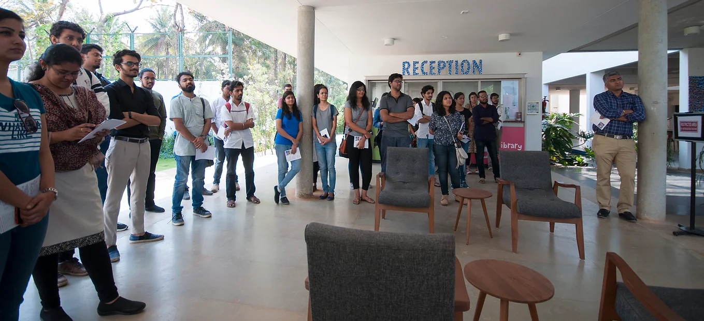
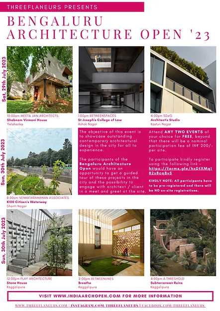
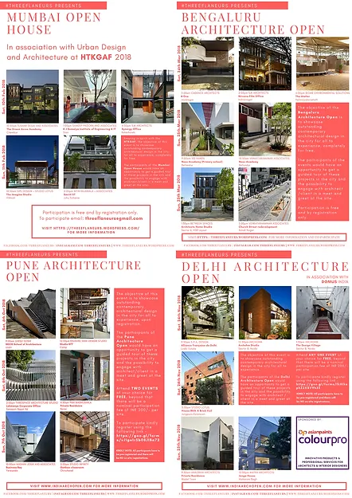

India Architecture Open

SHOWCASING OUTSTANDING CONTEMPORARY DESIGN
What is the India Architecture Open?
The India Architecture Open is a platform for - open house format - public design events that aims to showcase outstanding contemporary architecture, interior, landscape and urban design across multiple Indian cities.
Who can attend?
All sections of the community are encouraged to participate in these events. Under this initiative design curious individuals can sign up to explore and understand the value of a well-designed built environment.
What can you expect?
The participants would have an opportunity to get a guided tour of a project and the possibility to engage with architect/designer/client in a meet and greet at the site. We hope these events will lead to interesting discussions about the state of architecture in our cities.
Events

Bengaluru Architecture Open
29th & 30th July 2023
Join us a we explore seven recently completed architecture & landscape projects across Bengaluru.
Click HERE to know more

Previous India Architecture Open Events
2018 / 2019 / 2020
Over the past few years we have successfully organised these events in various cities across in India.
Click HERE to know more

Three Flaneurs gave us the exposure to explore and experience the varied buildings around Mumbai. It was indeed a great opportunity for us as future interior designers to observe and learn from the works of such well known firms & their iconic projects; through their design process and also to see how they have developed the space into what it is at present. It was an amazing experience!
Prachiti Kamath - Interior Design Student ( Mumbai Architecture Open 2020 Participant)

Contact Us
903 Nutan Yojana, 16th Road, Khar (West), Mumbai - 52, Maharashtra, INDIA
info@threeflaneurs.comWho is organising?
India Architecture Open is a series of public design events organised by the #ThreeFlaneurs.
The #ThreeFlaneurs is a design and travel blog, which is the brainchild of three architects who believe in the absolute importance of learning architecture through experiencing it in person. Check them out by clicking HERE.


{kind=link}